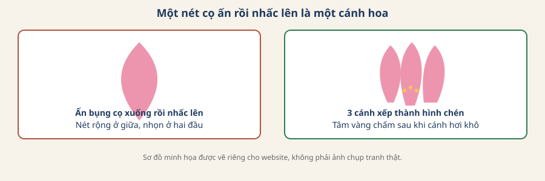

5 bức hoa lá cỡ bưu thiếp: tulip, hướng dương, hoa giấy, loa kèn, hoa lan
Tác giả: Ruler
Bạn đã vẽ 5 bức nhỏ cỡ bưu thiếp ở bài "5 bức vẽ nhỏ cỡ bưu thiếp": hoàng hôn, lá đơn, hoa ba cánh, núi xa và trăng đêm. Bài này dạy riêng về hoa lá, vì hoa là chủ đề người mới vẽ nhiều nhất và cũng là chủ đề dễ vẽ đẹp nhất. CrafterPress viết rằng hoa lỏng chỉ cần vài nét cọ mềm gợi ý hình hoa, không cần vẽ đúng như ảnh chụp, và Breathly viết rằng một bông hoa đơn giản chỉ mất khoảng 10 đến 15 phút. Bạn không cần vẽ đúng như ảnh chụp. Bạn chỉ cần vài nét cọ mềm là người xem đã nhận ra hoa. Bài này dạy bạn 5 bức hoa lá, mỗi bức tập một kỹ năng khác nhau, làm xong trong một buổi ngắn. Năm bức này chọn theo ba tiêu chí riêng của website: mỗi bức dạy một kỹ năng khác nhau trong web, hoa nào cũng là hoa bạn nhìn thấy ngoài đời ở Việt Nam, và năm bức dùng năm màu khác nhau để bạn tập pha màu. Bài này dùng đúng bộ đồ tối thiểu ở bài bộ đồ: giấy 300 gsm cold press, cọ tròn cỡ 8 và cỡ 4, hộp pan 12 màu.

Sơ đồ minh họa được vẽ riêng cho website — không phải ảnh chụp. Một nét cọ ấn xuống rồi nhấc lên tạo thành cánh hoa; ba cánh xếp thành hình chén của hoa tulip.
Vì sao hoa lá là chủ đề dễ nhất cho người mới
Hoa lá dễ vẽ vì ba lý do. Thứ nhất, hoa không có đường thẳng nào cần vẽ đúng: không có mái nhà phải thẳng, không có khuôn mặt phải cân. CrafterPress viết rằng hoa lỏng là vài nét cọ mềm gợi ý hoa, không cần vẽ đúng như ảnh, và Breathly viết rằng cánh hơi to một chút thì đó là cách hoa mọc, màu loang vào nhau thì đó là bóng tự nhiên. Thứ hai, hoa dạy bạn đúng các kỹ năng nền của màu nước: loang màu ướt trên ướt, pha màu, kiểm soát nước và biết khi nào dừng. Bài kỹ thuật loang màu đã dạy bạn cách hai màu ướt gặp nhau, bài vẽ trên giấy khô đã dạy bạn nét sắc, bài chồng lớp đã dạy bạn xây chiều sâu — và bài này dùng lại cả ba kỹ năng đó, mỗi bức một kỹ năng chính. Thứ ba, hoa vẽ nhanh: một bông hoa đơn giản chỉ mất khoảng 10 đến 15 phút, theo Breathly, nên bạn vẽ được nhiều bông trong một buổi và thấy mình tiến bộ rõ ràng.
Hoa vẽ bằng nét cọ ấn rồi nhấc lên, gọi là press-and-lift: chạm đầu cọ xuống giấy, ấn bụng cọ xuống để nét rộng ra, rồi nhấc dần lên để nét thu lại thành điểm nhọn — một nét như vậy đã là một cánh hoa. CrafterPress viết rằng bạn vẽ hình tròn ướt ở tâm rồi chạm màu vào cho loang, thêm 3 đến 5 cánh lỏng quanh tâm bằng nét ấn bụng cọ rồi nhấc lên. Bạn không cần phác thảo chi tiết bằng bút chì trước, bạn chỉ cần chấm màu và để cọ làm việc. Bạn tập nét này 20 lần trên giấy nháp trước khi vẽ bông hoa đầu tiên, vì nó là nét cơ bản của cả bài này.
Bạn dùng màu gì để vẽ hoa? Bạn dùng chính 6 màu gốc ấm và lạnh trong bài pha màu. Tulip đỏ dùng đỏ ấm và đỏ lạnh. Hướng dương dùng vàng ấm và vàng lạnh. Hoa giấy dùng đỏ lạnh trộn xanh ấm cho màu hồng đậm. Loa kèn dùng đỏ lạnh pha thật loãng. Hoa lan dùng đỏ lạnh trộn xanh ấm pha loãng cho màu tím nhạt. Bạn không cần mua thêm màu nào cho bài này.
Bức 1: hoa tulip — hình chén bằng ba cánh
Tulip là bông hoa dễ nhất trong bài này, vì nó chỉ là một hình chén làm từ ba cánh. Bạn mua một bông tulip ở cửa hàng hoa về đặt cạnh giấy mà vẽ theo, không vẽ theo trí nhớ. Little Coffee Fox viết rằng tulip là chủ đề dễ vẽ cho người mới học hoa màu nước, vì hình chén của nó chỉ cần hai nét bầu dục đặt cạnh nhau.
Bước 1: pha màu cánh thật loãng. Bạn chọn màu đỏ ấm trộn một chút đỏ lạnh, pha với nhiều nước cho màu mềm và trong, không đậm. Bạn luôn có thể thêm màu sau, nhưng không thể lấy màu đi.
Bước 2: vẽ hai cánh ngoài bằng hai nét bầu dục. Bạn dùng cọ tròn nạp màu loãng, vẽ hai hình bầu dục đặt cạnh nhau bằng kỹ thuật ướt trên khô, nối nhau ở đáy thành hình chữ V tròn. Hai nét này là cánh ngoài của tulip. Bạn không viền rồi tô màu vào trong, bạn chỉ đặt màu xuống bằng một lần ấn cọ nhẹ.
Bước 3: hòa nửa trên bằng nước sạch, chừa trắng ở giữa. Bạn rửa cọ, lấy nước sạch, dùng đầu cọ hòa nhẹ nửa trên của tulip và chừa một khoảng trắng ở giữa. Rồi bạn thêm một chút màu đậm hơn ở phía phải để tạo bóng. Bạn đợi lớp này khô hẳn.
Bước 4: vẽ thân bằng một nét dài. Bạn lấy màu xanh lá, bắt đầu từ gốc hoa rồi kéo đầu cọ xuống chậm rãi thành một nét mỏng đều. Thân hoa hơi lượn sóng, không thẳng hoàn toàn, cho hoa trông tự nhiên.
Bước 5: vẽ lá và chấm tâm. Khi lớp thân còn ướt, bạn lấy thêm màu xanh, ấn cọ vừa phải để vẽ một chiếc lá dài và mỏng bằng kỹ thuật ướt trên khô. Cuối cùng bạn lấy một chút màu nâu đậm, giữ cọ thẳng đứng, dùng đầu cọ chấm những chấm nhỏ ở giữa hoa thành hình chữ V. Bạn đã xong một bông tulip.
Thêm một bông tulip nhỏ hơn bên cạnh, khác màu — tulip vàng hoặc tulip hồng — là bạn đã có một bức tranh hoàn chỉnh mà không cần thêm gì nữa.
Bức 2: hoa hướng dương — hai lớp cánh và tâm tối
Hướng dương dạy bạn vẽ cánh dài tỏa ra và vẽ tâm tối có hạt. At Forest's Edge viết rằng cánh hướng dương chỉ cần nét ấn rồi nhấc lên lặp lại quanh tâm, và màu tự thay đổi từ cánh này sang cánh khác, kể cả chỗ bạn lỡ tay cũng thành vân tự nhiên.
Bước 1: vẽ tròn làm tâm. Bạn lấy một vật tròn nhỏ, ví dụ nắp chai, đặt lên giấy và vẽ nhẹ quanh nó bằng bút chì để có hình tâm hoa. Bạn đừng vẽ tâm quá to: đường kính tâm khoảng bằng chiều dài một cánh hoa.
Bước 2: vẽ lớp cánh đầu bằng nét ấn rồi nhấc lên. Bạn dùng cọ tròn nạp màu vàng ấm, bắt đầu từ đầu cọ, ấn xuống rồi nhấc lên để tạo thành mỗi cánh, vẽ quanh tâm với mỗi cánh dài khoảng bằng đường kính tâm, hơi chồm vào trong tâm một chút. Bạn thêm màu vào cọ mỗi khi màu sắp hết.
Bước 3: vẽ lớp cánh thứ hai màu cam hơn. Bạn pha màu cam hơn lớp đầu một chút, vẽ lớp cánh thứ hai xen kẽ vào khoảng trắng giữa các cánh lớp đầu, chồng lên lớp đầu một phần. Hai lớp cánh chồng nhau làm hoa trông đầy đặn.
Bước 4: làm ướt tâm rồi chấm màu nâu. Bạn làm ướt bên trong vòng tròn tâm bằng cọ ẩm, rồi chấm màu nâu vào: bạn pha nâu từ vàng nghệ, xanh ultramarine và một chút hồng cánh sen — càng nhiều xanh thì nâu càng tối và lạnh, và chính độ tối này làm tâm hoa thật. Bạn chấm nhiều màu ở mép tâm, ít màu ở giữa, để giữa tâm còn khoảng trắng tạo chiều sâu.
Bước 5: chấm hạt và vẽ gân cánh. Bạn pha màu nâu thật đậm, chấm những chấm nhỏ quanh mép tâm và giữa tâm, chừa một vòng ít chấm ở giữa. Rồi bạn dùng màu cam đậm hơn vẽ 1 đến 3 đường trên mỗi cánh, chạy từ tâm ra đầu cánh. Cuối cùng bạn vẽ thân xanh bằng một nét dài hơi cong và một lá lớn. Bạn đã xong một bông hướng dương.
Hướng dương vẽ theo bông thật ngoài nắng mới đẹp, vì cánh hướng dương dưới nắng có một phía sáng vàng chanh và một phía tối cam đất — hai phía đó chính là hai màu vàng trong bài pha màu của bạn.
Nếu bạn muốn ngắm hướng dương thật ngoài nắng, cánh đồng hoa hướng dương ở nông trường 19/5, xã Nghĩa Sơn, huyện Nghĩa Đàn, tỉnh Nghệ An là nơi xem hoa thật: hoa nở rộ hai đợt trong năm, tháng 3–4 và rực rỡ nhất từ tháng 11 đến tháng 1, vào cửa miễn phí. Bạn đi vào buổi sáng sẽ thấy rõ một phía cánh sáng vàng chanh và một phía tối cam đất, đúng hai màu vàng trong bức vẽ này.
Bức 3: hoa giấy — chùm ba lá bắc lặp lại
Hoa giấy mọc trên tường và cổng khắp nơi ở Việt Nam, và nó dạy bạn một điều lạ: cái bạn tưởng là cánh hoa thật ra không phải cánh hoa. Một bông hoa giấy là ba lá bắc màu hồng đậm xếp thành hình tam giác, ở giữa là ba chấm trắng nhỏ — đó mới là hoa thật. Hoa giấy vẽ bằng cách lặp lại một nét duy nhất: một lá bắc.
Bước 1: nhìn kỹ một bông hoa giấy thật. Bạn ra cổng hoặc ban công, ngắt một bông hoa giấy và nhìn kỹ: ba lá bắc hình trái tim xếp quanh một tâm, mỗi lá bắc có gân tỏa ra từ tâm, và ở giữa là ba chấm trắng nhỏ. Bạn nhớ hình này, vì cả bức vẽ chỉ là lặp lại hình này nhiều lần.
Bước 2: vẽ một bông bằng ba lá bắc. Bạn pha màu hồng đậm từ đỏ lạnh trộn một chút xanh ấm. Hai lá bắc đối nhau vẽ trước, rồi tới lá bắc thứ ba. Mỗi lá bắc là một nét ấn bụng cọ rồi nhấc lên, giống như cánh hoa tulip ở bức 1. Lá bắc đầu tiên nhạt hơn, hai lá sau đậm hơn một chút để tạo chiều sâu.
Bước 3: vẽ gân và chấm hoa thật. Bạn dùng cọ nhỏ vẽ những đường gân mảnh tỏa ra từ tâm mỗi lá bắc. Rồi bạn chấm ba chấm trắng nhỏ ở giữa bông — bạn chừa giấy trắng, không tô màu trắng lên. Ba chấm trắng này làm người xem nhận ra ngay đó là hoa giấy, không phải hoa nào khác.
Bước 4: lặp lại thành chùm và vẽ lá. Một chùm hoa giấy có 5 đến 7 bông, bông ở phía sau đậm hơn bông ở phía trước. Thân nâu nối các bông lại, rồi lá bầu dục xanh xen kẽ giữa các bông. Bạn đừng vẽ từng bông quá kỹ — hoa giấy đẹp vì chùm hoa đông và rực, không phải vì một bông hoàn hảo.
Bạn vẽ hoa giấy vào sổ tay rất hợp, vì một chùm hoa giấy chỉ mất khoảng 10 phút mà đã đủ rực để làm một trang sổ tay.
Bức 4: hoa loa kèn — hình loa bằng ướt trên ướt
Hoa loa kèn dạy bạn vẽ hình loa: một hình nón miệng loe, không phải hình tròn. EmptyEasel viết rằng hoa loa, hoa chuông, hoa thủy tiên đều có hình loa — một hình nón miệng loe — và điểm mấu chốt khi vẽ là nhớ tâm của hình nón nối với thân ở đâu, vì hoa loa luôn tối bên trong trừ khi nhìn thẳng từ trên xuống.
Bước 1: vẽ hình loa, không vẽ hình tròn. Bạn phác thảo nhẹ bằng bút chì một hình phễu: miệng loe ra ở trên, đáy thu lại ở cuống. Bạn vẽ miệng hoa hơi nghiêng sang một bên, vì hoa loa thật hiếm khi đứng thẳng.
Bước 2: wash đầu tiên thật loãng. Bạn pha đỏ lạnh với thật nhiều nước cho màu hồng nhạt. Bạn tô từ miệng hoa xuống đáy, để màu tự loang, không tô đều. Bạn tô cả cánh loa và phần trong của loa bằng cùng một wash, vì màu trong của loa chỉ đậm hơn màu ngoài một chút.
Bước 3: chấm màu đậm khi còn ướt. Khi wash đầu tiên còn ướt, bạn lấy màu đậm hơn một chút chấm vào chỗ lõm giữa hoa và mép ngoài của cánh loa. Màu sẽ loang mềm và tạo chiều dày cho cánh loa. Bạn đừng chấm quá nhiều — một lần chấm là đủ.
Bước 4: chồng lớp thứ hai ở đáy và lấy màu ra. Bạn đợi lớp đầu khô hẳn, rồi chồng một lớp đậm hơn ở đáy hoa, chỗ loa nối với cuống. Rồi bạn dùng cọ nhỏ sạch và ẩm lấy màu ra nhẹ nhàng để tạo những đường nét sáng trên cánh loa. Bài "Chữa vùng trắng đã mất" trong website này đã dạy bạn cách lấy màu ra khi còn ướt — và đây chính là lúc bạn dùng nó.
Bước 5: vẽ nhị vàng và lá. Bạn vẽ nhị hoa màu vàng ở giữa loa bằng màu vàng nghệ, một nét ngắn thẳng đứng. Bạn vẽ lá dài bằng màu xanh pha từ xanh lá và xanh ultramarine, lá loa kèn dài và hẹp, không bầu dục như lá hoa giấy. Bạn đã xong một bông loa kèn.
Bạn vẽ loa kèn trắng bằng cách tô nền xung quanh và chừa cánh là giấy trắng, giống như bạn chừa trắng ở hoa tulip. Loa kèn trắng bán nhiều ở chợ hoa, bạn mua một bông về mà vẽ theo.
Bức 5: hoa lan — wash loãng ba lớp
Hoa lan là bức khó nhất trong bài này, vì nó dạy bạn vẽ bằng ba lớp wash từ nhạt đến đậm, không vẽ chi tiết ngay từ đầu. Holden FG viết rằng bạn vẽ lan bằng ba lớp: lớp nhạt nhất trước, lớp đậm hơn sau, lớp chi tiết cuối cùng — và lá với thân vẽ sau cùng, khi hoa đã khô hẳn.
Bước 1: quan sát và phác thảo nhẹ. Bạn mua một chậu lan hồ điệp nhỏ về đặt cạnh giấy. Bạn nhìn kỹ: lan có 5 cánh — 3 cánh ngoài lớn, 2 cánh trong nhỏ hơn, và môi hoa ở giữa có hình khác hẳn. Bạn phác thảo nhẹ bằng bút chì, chỉ vẽ khung hình, không vẽ chi tiết. Bạn đừng tẩy nhiều, vì vết tẩy làm giấy xước và màu loang không đều.
Bước 2: lớp đầu tiên chỉ dùng màu nhạt nhất. Bạn pha đỏ lạnh trộn một chút xanh ấm với thật nhiều nước cho màu tím nhạt. Bạn tô toàn bộ cánh hoa bằng lớp wash này, để khô hẳn. Lớp này chỉ là màu nền — bạn đừng cố vẽ bóng hay chi tiết ở lớp này.
Bước 3: lớp thứ hai đậm hơn ở chỗ chồng cánh. Bạn pha màu đậm hơn một chút, tô vào chỗ cánh chồng lên nhau và chỗ có bóng tự nhiên. Bạn không tô lên điểm sáng nhất của cánh — bạn chừa điểm sáng đó là giấy trắng từ lớp đầu. Katia Galante viết rằng bạn chồng lớp để tạo chiều sâu, mỗi lớp đậm hơn lớp trước một chút, và bạn để mỗi lớp khô hẳn trước khi chồng lớp sau.
Bước 4: lớp thứ ba vẽ chi tiết bằng cọ nhỏ. Bạn dùng cọ tròn cỡ 4, pha màu đặc hơn, vẽ gân cánh, môi hoa và nhị. Bạn vẽ gân bằng những nét mảnh chạy từ gốc cánh ra mép cánh. Bạn vẽ môi hoa đậm hơn cánh, vì môi hoa là điểm nhấn của bông lan.
Bước 5: vẽ lá và thân cuối cùng. Bạn đợi hoa khô hẳn rồi mới vẽ lá và thân, vì màu xanh loang rất nhanh trên giấy ướt và có thể phủ mất hoa. Bạn vẽ lá lan dài và cong, màu xanh pha từ vàng lạnh và xanh lạnh. Bạn đã xong một bông lan.
Bạn vẽ lan 3 lần trong tuần, mỗi lần một màu khác nhau — lan tím, lan hồng, lan trắng — và bạn sẽ thấy tay mình ổn định dần, và màu hoa của bạn sạch dần.
Những lỗi thường gặp khi vẽ hoa lá
Hoa bị đục vì tô quá nhiều. Bạn tô đi tô lại một cánh hoa, màu đục dần. CrafterPress viết rằng bạn đặt mỗi cánh hoa một lần rồi để yên khi khô, và đừng chà lại vào cánh hoa đã xong. Bạn nạp màu mới cho mỗi cánh hoa, chỉ rửa cọ khi bạn muốn màu sạch hơn hoặc nhạt hơn.
Hoa bị nâu vì trộn quá nhiều màu trên giấy. CrafterPress viết rằng hoa bị nâu nghĩa là bạn trộn quá nhiều màu trên giấy: bạn chỉ dùng màu hoa cộng với vàng trong bông hoa, giữ màu xanh trong lá, và rửa lọ nước thường xuyên. Bạn không trộn xanh lá vào cánh hoa, vì xanh lá và hồng trộn nhau sẽ thành nâu.
Hoa phẳng, không có điểm sáng. Bạn tô kín cả bông hoa, không chừa khoảng trắng nào. CrafterPress viết rằng bạn chừa những khoảng trắng nhỏ nơi giấy lộ ra để tạo điểm sáng, và những điểm sáng đó gợi ánh nắng và giữ cho bông hoa không bị nặng và phẳng. Bạn chừa trắng ở mép cánh hoa và ở tâm hoa.
Lá xanh loang vào hoa. Bạn vẽ lá khi hoa còn ướt, màu xanh loang vào cánh hoa và làm hoa bị nâu. CrafterPress khuyên bạn vẽ lá sau khi hoa đã khô một chút, vì màu xanh loang nhanh trên giấy rất ướt và có thể phủ mất hoa nhỏ. Bạn vẽ hoa trước, đợi hoa khô, rồi vẽ lá.
Hoa lan bị nặng vì tô quá đậm ngay từ lớp đầu. Bạn tô lớp đầu tiên đã đậm như màu cuối cùng, nên không còn chỗ để chồng lớp. Holden FG viết rằng lớp đầu tiên chỉ dùng màu nhạt nhất, lớp thứ hai đậm hơn, lớp thứ ba mới vẽ chi tiết — và bạn đừng tô lên điểm sáng nhất của cánh ở bất kỳ lớp nào.
Hoa loa kèn mất hình loa vì tô đều cả bông. Bạn tô miệng hoa và đáy hoa cùng một độ đậm, nên hoa trông như hình tròn. EmptyEasel viết rằng hoa loa là hình nón miệng loe, và hoa luôn tối bên trong trừ khi nhìn thẳng từ trên xuống — bạn giữ đáy hoa đậm hơn miệng hoa, và giữ một khoảng trắng ở mép miệng hoa làm điểm sáng.
Kết luận
Bạn đã vẽ được 5 bức hoa lá: tulip, hướng dương, hoa giấy, loa kèn và hoa lan. Mỗi bức chỉ dùng một hoặc hai kỹ năng: nét ấn rồi nhấc lên, vẽ hai lớp cánh, lặp lại một nét, ướt trên ướt, wash loãng ba lớp. Bạn vẽ mỗi bức 3 lần trong tuần, mỗi lần một màu khác nhau, và bạn sẽ thấy tay mình ổn định dần, và màu hoa của bạn sạch dần.
Bài tiếp theo trong website này là bài "Phong cảnh nhỏ: núi, biển, trăng", nơi bạn dùng chính các kỹ năng này — nét ấn rồi nhấc lên, vẽ từ xa đến gần, chừa trắng — để vẽ phong cảnh. Bạn đọc bài đó khi đã vẽ xong 5 bức hoa, vì khi đó bạn đã quen với việc vẽ nhanh và không sửa.
Nguồn tham khảo
- Little Coffee Fox, "How to Paint Watercolor Tulips" — tulip: hai cánh bầu dục ướt trên khô, hòa nửa trên bằng nước sạch chừa trắng, thân một nét, chấm tâm: https://littlecoffeefox.com/how-to-paint-watercolor-tulips/
- At Forest's Edge, "Easy Three Color Watercolor Sunflower Tutorial for Beginners" — hướng dương: cánh ấn rồi nhấc lên hai lớp, tâm tối pha từ vàng nghệ, xanh ultramarine và chút hồng cánh sen: https://www.atforestsedge.com/watercolor-sunflower-tutorial-for-beginners/
- The Home Intent, "How to Paint a Sunflower in Watercolor" — hướng dương: vẽ tròn làm tâm, hai lớp cánh, chấm nâu ở tâm, vẽ gân cánh: https://thehomeintent.com/how-to-paint-a-sunflower-in-watercolor/
- Saloni (@just_be_butterfly), video hướng dẫn vẽ hoa giấy — hoa giấy: ba lá bắc (hai đối nhau và một), gân tỏa từ tâm, chấm trắng là hoa thật, thân nâu, lá bầu dục: https://www.instagram.com/reel/Dbz7a7-TZXV/
- Ciao Yin Luo, "Learn How to Paint Watercolor Calla Lily" — loa kèn: wash hồng nhạt đầu tiên, lớp đậm ở đáy khi còn ướt, lấy màu ra tạo đường nét, nhị vàng: https://ciaoyinluo.com/learn-how-to-paint-watercol-calla-lily/
- EmptyEasel, "How to Paint Loose, Expressive Lilies in Watercolor" — loa kèn: hình loa là hình nón miệng loe, tô màu nhạt nhất trước, ba lượt từ nhạt đến đậm: https://emptyeasel.com/2014/07/15/how-to-paint-loose-expressive-lilies-in-watercolor/
- Holden FG, "Paint an Orchid in Watercolor" — hoa lan: phác thảo nhẹ, lớp nhạt nhất trước, lớp hai đậm hơn, lớp ba chi tiết, lá và thân cuối cùng: https://www.holdenfg.org/blog/paint-an-orchid-in-watercolor-3/
- Katia Galante Art, "Step-by-Step Guide to Painting Pansy Orchids in Watercolor" — hoa lan: wash nhạt đầu tiên, chồng lớp tạo chiều sâu, chi tiết bằng cọ nhỏ: https://www.katiagalanteart.com/blog/step-by-step-guide-to-painting-pansy-orchids-in-watercolor
- CrafterPress, "Watercolor Blooms: Easy Loose Flowers for Beginners" — hoa lỏng: nét ấn bụng cọ rồi nhấc lên, chừa trắng làm điểm sáng, lỗi đục, nâu, phẳng và lá loang: https://crafterpress.com/watercolor-blooms/
- Breathly (Margaret Whitfield), "How to Paint Simple Watercolor Flowers for Beginners" — hoa dễ vẽ vì cánh không cần hoàn hảo; một bông hoa mất khoảng 10–15 phút: https://mybreathly.com/blogs/creative-calm/how-to-paint-simple-flowers-in-watercolor
- Toplist Nghệ An, "Đồi hoa hướng dương Nghệ An – Điểm check-in triệu view" — hướng dương: cánh đồng ở nông trường 19/5, xã Nghĩa Sơn, huyện Nghĩa Đàn, tỉnh Nghệ An; hoa nở rộ tháng 3–4 và rực rỡ nhất từ tháng 11 đến tháng 1; vào cửa miễn phí: https://toplistnghean.vn/du-lich/doi-hoa-huong-duong-nghe-an